The Sun is the star at the heart of our solar system.
Its gravity holds the solar system together, keeping everything — from the biggest planets to the smallest bits of debris — in its orbit.
Surface Temperature: 5,600°C
Moons: N/A
Diameter: 1.4 * 106km
Distance from Sun (AU): N/A
A brief overview
From our vantage point on Earth, the Sun may appear like an unchanging source of light and heat in the sky. But the Sun is a dynamic star, constantly changing and sending energy out into space.
The Sun is the largest object in our solar system. Its diameter is about 865,000 miles (1.4 million kilometers). Its gravity holds the solar system together, keeping everything from the biggest planets to the smallest bits of debris in orbit around it.
Even though the Sun is the center of our solar system and essential to our survival, it’s only an average star in terms of its size. Stars up to 100 times larger have been found. And many solar systems have more than one star. By studying our Sun, scientists can better understand the workings of distant stars.
The hottest part of the Sun is its core, where temperatures top 27 million °F (15 million °C). The part of the Sun we call its surface – the photosphere – is a relatively cool 10,000 °F (5,500 °C). In one of the Sun’s biggest mysteries, the Sun’s outer atmosphere, the corona, gets hotter the farther it stretches from the surface. The corona reaches up to 3.5 million °F (2 million °C) – much, much hotter than the photosphere.
Formation
The Sun formed about 4.6 billion years ago in a giant, spinning cloud of gas and dust called the solar nebula. As the nebula collapsed under its own gravity, it spun faster and flattened into a disk. Most of the nebula's material was pulled toward the center to form our Sun, which accounts for 99.8% of our solar system’s mass. Much of the remaining material formed the planets and other objects that now orbit the Sun. (The rest of the leftover gas and dust was blown away by the young Sun's early solar wind.)
Like all stars, our Sun will eventually run out of energy. When it starts to die, the Sun will expand into a red giant star, becoming so large that it will engulf Mercury and Venus, and possibly Earth as well. Scientists predict the Sun is a little less than halfway through its lifetime and will last another 5 billion years or so before it becomes a white dwarf.
Orbit and Rotation
The Sun is located in the Milky Way galaxy in a spiral arm called the Orion Spur that extends outward from the Sagittarius arm.
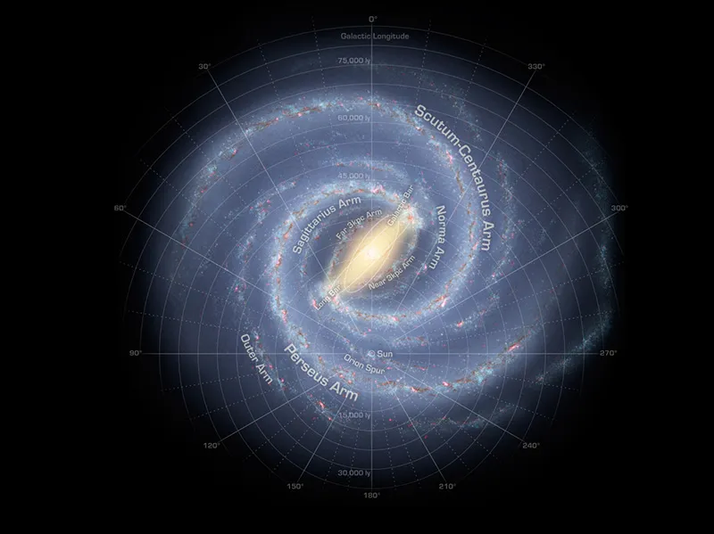
The Sun orbits the center of the Milky Way, bringing with it the planets, asteroids, comets, and other objects in our solar system. Our solar system is moving with an average velocity of 450,000 miles per hour (720,000 kilometers per hour). But even at this speed, it takes about 230 million years for the Sun to make one complete trip around the Milky Way.
The Sun rotates on its axis as it revolves around the galaxy. Its spin has a tilt of 7.25 degrees with respect to the plane of the planets’ orbits. Since the Sun is not solid, different parts rotate at different rates. At the equator, the Sun spins around once about every 25 Earth days, but at its poles, the Sun rotates once on its axis every 36 Earth days.
Mercury is the closest planet to the Sun, and the smallest planet in our solar system - only slightly larger than Earth's Moon.
Surface Temperature: 430°C
Moons: 0
Diameter: 4879.4km
Distance from Sun (AU): 0.39
A brief overview
Mercury's surface temperatures are both extremely hot and cold. Because the planet is so close to the Sun, day temperatures can reach highs of 800°F (430°C). Without an atmosphere to retain that heat at night, temperatures can dip as low as -290°F (-180°C).
Despite its proximity to the Sun, Mercury is not the hottest planet in our solar system – that title belongs to nearby Venus, thanks to its dense atmosphere. But Mercury is the fastest planet, zipping around the Sun every 88 Earth days.
Moons and Rings
Due to it's distance from the Sun, Mercury is unable to have any moons, as any asteroids or rocks are pulled towards the Sun instead and broken apart into dust.
The same concept can be applied for the reason Mercury lacks a ring system.
Structure
Mercury is the second densest planet, after Earth. It has a large metallic core with a radius of about 1,289 miles (2,074 kilometers), about 85% of the planet's radius. There is evidence that it is partly molten or liquid. Mercury's outer shell, comparable to Earth's outer shell (called the mantle and crust), is only about 400 kilometers (250 miles) thick. 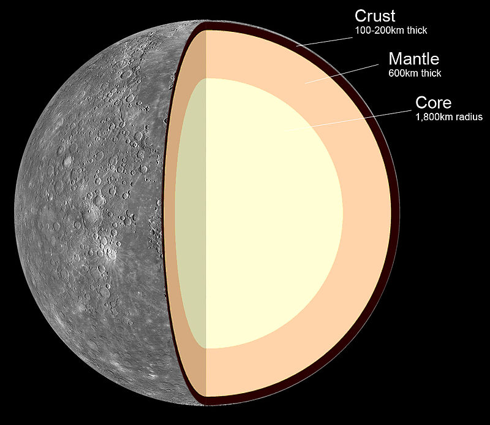
Surface
Surface
Mercury's surface resembles that of Earth's Moon, scarred by many impact craters resulting from collisions with meteoroids and comets. Craters and features on Mercury are named after famous deceased artists, musicians, or authors, including children's author Dr. Seuss and dance pioneer Alvin Ailey.
Very large impact basins, including Caloris (960 miles or 1,550 kilometers in diameter) and Rachmaninoff (190 miles, or 306 kilometers in diameter), were created by asteroid impacts on the planet's surface early in the solar system's history. While there are large areas of smooth terrain, there are also cliffs, some hundreds of miles long and soaring up to a mile high. They rose as the planet's interior cooled and contracted over the billions of years since Mercury formed.
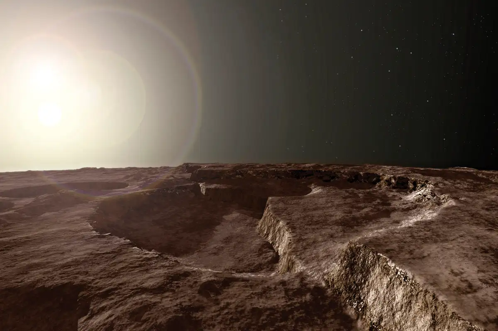
Most of Mercury's surface would appear greyish-brown to the human eye. The bright streaks are called "crater rays." They are formed when an asteroid or comet strikes the surface. The tremendous amount of energy that is released in such an impact digs a big hole in the ground, and also crushes a huge amount of rock under the point of impact. Some of this crushed material is thrown far from the crater and then falls to the surface, forming the rays. Fine particles of crushed rock are more reflective than large pieces, so the rays look brighter. The space environment – dust impacts and solar-wind particles – causes the rays to darken with time.
Temperatures on Mercury are extreme. During the day, temperatures on the surface can reach 800 degrees Fahrenheit (430 degrees Celsius). Because the planet has no atmosphere to retain that heat, nighttime temperatures on the surface can drop to minus 290 degrees Fahrenheit (minus 180 degrees Celsius).
Mercury may have water ice at its north and south poles inside deep craters, but only in regions in permanent shadows. In those shadows, it could be cold enough to preserve water ice despite the high temperatures on sunlit parts of the planet.
Venus is the second planet from the Sun, and the sixth largest planet. It’s the hottest planet in our solar system.
Surface Temperature: 464°C
Moons: 0
Diameter: 12,104km
Distance from Sun (AU): 0.72
A brief overview
Venus is the second planet from the Sun, and Earth's closest planetary neighbor. Venus is the third brightest object in the sky after the Sun and Moon. Venus spins slowly in the opposite direction from most planets.
Venus is similar in structure and size to Earth, and is sometimes called Earth's evil twin. Its thick atmosphere traps heat in a runaway greenhouse effect, making it the hottest planet in our solar system with surface temperatures hot enough to melt lead. Below the dense, persistent clouds, the surface has volcanoes and deformed mountains.
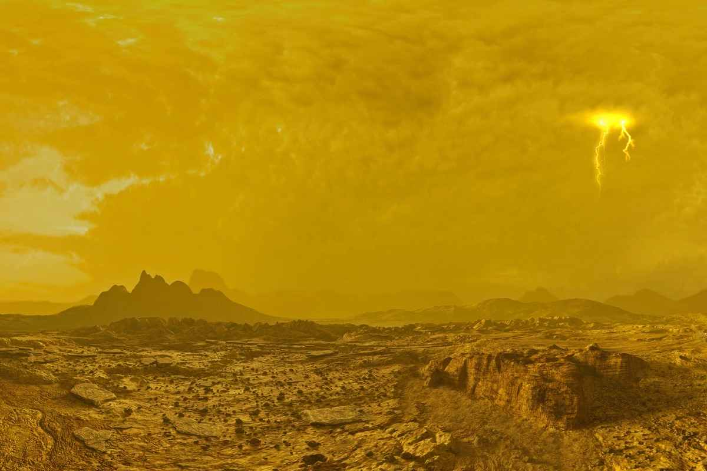
Structure
If we could slice Venus and Earth in half, pole to pole, and place them side by side, they would look remarkably similar. Each planet has an iron core enveloped by a hot-rock mantle; the thinnest of skins forms a rocky, exterior crust. On both planets, this thin skin changes form and sometimes erupts into volcanoes in response to the ebb and flow of heat and pressure deep beneath.
On Earth, the slow movement of continents over thousands and millions of years reshapes the surface, a process known as “plate tectonics.” Something similar might have happened on Venus early in its history. Today a key element of this process could be operating: subduction, or the sliding of one continental “plate” beneath another, which can also trigger volcanoes. Subduction is believed to be the first step in creating plate tectonics.
NASA’s Magellan spacecraft, which ended a five-year mission to Venus in 1994, mapped the broiling surface using radar. Magellan saw a land of extreme volcanism – a relatively young surface, one recently reshaped (in geologic terms), and chains of towering mountains.
Life Potential
Thirty miles up (about 50 kilometers) from the surface of Venus temperatures range from 86 to 158 Fahrenheit (30 to 70 Celsius). This temperature range could accommodate Earthly life, such as “extremophile” microbes. And atmospheric pressure at that height is similar to what we find on Earth’s surface.
At the tops of Venus’ clouds, whipped around the planet by winds measured as high as 224 mph (360 kph), we find another transformation. Persistent, dark streaks appear. Scientists are so far unable to explain why these streaks remain stubbornly intact, even amid hurricane-force winds. They also have the odd habit of absorbing ultraviolet radiation.
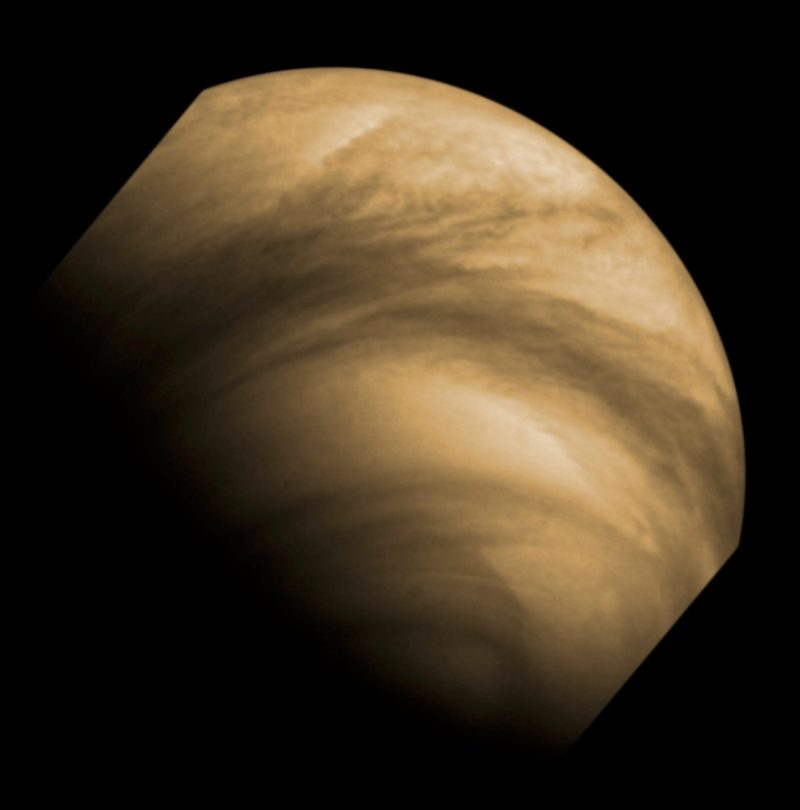
The most likely explanations focus on fine particles, ice crystals, or even a chemical compound called iron chloride. Although it's much less likely, another possibility considered by scientists who study astrobiology is that these streaks could be made up of microbial life, Venus-style. Astrobiologists note that ring-shaped linkages of sulfur atoms, known to exist in Venus’ atmosphere, could provide microbes with a kind of coating that would protect them from sulfuric acid. These handy chemical cloaks would also absorb potentially damaging ultraviolet light and re-radiate it as visible light.
Some of the Russian Venera probes did, indeed, detect particles in Venus’ lower atmosphere about a micron in length – roughly the same size as a bacterium on Earth.
None of these findings provide compelling evidence for the existence of life in Venus’ clouds. But the questions they raise, along with Venus’ vanished ocean, its violently volcanic surface, and its hellish history, make a compelling case for missions to investigate our temperamental sister planet. There is much, it would seem, that she can teach us.

Our Home.
Prosperity, Liberty, Democracy.
Our way of Life.
Surface Temperature: 15°C
Moons: 1
Diameter: 12,742km
Distance from Sun (AU): 1
A brief overview
While Earth is only the fifth largest planet in the solar system, it is the only world in our solar system with liquid water on the surface. Just slightly larger than nearby Venus, Earth is the biggest of the four planets closest to the Sun, all of which are made of rock and metal.
Earth is the only planet in the solar system whose English name does not come from Greek or Roman mythology. The name was taken from Old English and Germanic. It simply means "the ground." There are, of course, many names for our planet in the thousands of languages spoken by the people of the third planet from the Sun.
Atmosphere
Near the surface, Earth has an atmosphere that consists of 78% nitrogen, 21% oxygen, and 1% other gases such as argon, carbon dioxide, and neon. The atmosphere affects Earth's long-term climate and short-term local weather and shields us from much of the harmful radiation coming from the Sun. 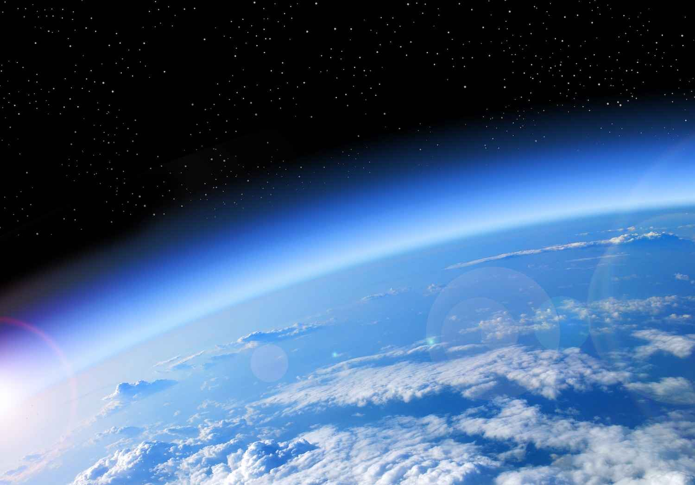 It also protects us from meteoroids, most of which burn up in the atmosphere, seen as meteors in the night sky, before they can strike the surface as meteorites.
Surface
Like Mars and Venus, Earth has volcanoes, mountains, and valleys. Earth's lithosphere, which includes the crust (both continental and oceanic) and the upper mantle, is divided into huge plates that are constantly moving. For example, the North American plate moves west over the Pacific Ocean basin, roughly at a rate equal to the growth of our fingernails. Earthquakes result when plates grind past one another, ride up over one another, collide to make mountains, or split and separate.
Earth's global ocean, which covers nearly 70% of the planet's surface, has an average depth of about 2.5 miles (4 kilometers) and contains 97% of Earth's water. Almost all of Earth's volcanoes are hidden under these oceans. Hawaii's Mauna Kea volcano is taller from base to summit than Mount Everest, but most of it is underwater. Earth's longest mountain range is also underwater, at the bottom of the Arctic and Atlantic oceans. It is four times longer than the Andes, Rockies and Himalayas combined.
The Pale Blue Dot
The Pale Blue Dot is a photograph of the Earth taken on Feb 14, 1990 by the space probe Voyager 1 from approximately 6 * 109km away.
 The Pale Blue Dot is a photograph of the Earth taken on Feb 14, 1990 by the space probe Voyager 1 from approximately 6 * 109km away.
The Pale Blue Dot is a photograph of the Earth taken on Feb 14, 1990 by the space probe Voyager 1 from approximately 6 * 109km away.

Mars is the fourth planet from the Sun, and the seventh largest.
It’s the only planet we know of inhabited entirely by robots.
Surface Temperature: -65°C
Moons: 2
Diameter: 6,779km
Distance from Sun (AU): 1.52
A brief overview
Mars is one of the most explored bodies in our solar system, and it's the only planet where we've sent rovers to roam the alien landscape. NASA missions have found lots of evidence that Mars was much wetter and warmer, with a thicker atmosphere, billions of years ago.
 Mars was named by the Romans for their god of war because its reddish color was reminiscent of blood. The Egyptians called it "Her Desher," meaning "the red one."
Mars was named by the Romans for their god of war because its reddish color was reminiscent of blood. The Egyptians called it "Her Desher," meaning "the red one."
Even today, it is frequently called the "Red Planet" because iron minerals in the Martian dirt oxidize, or rust, causing the surface to look red.
Surface
The Red Planet is actually many colors. At the surface, we see colors such as brown, gold, and tan. The reason Mars looks reddish is due to oxidization – or rusting – of iron in the rocks, regolith (Martian “soil”), and dust of Mars. This dust gets kicked up into the atmosphere and from a distance makes the planet appear mostly red.
 Interestingly, while Mars is about half the diameter of Earth, its surface has nearly the same area as Earth’s dry land. Its volcanoes, impact craters, crustal movement, and atmospheric conditions such as dust storms have altered the landscape of Mars over many years, creating some of the solar system's most interesting topographical features.
Interestingly, while Mars is about half the diameter of Earth, its surface has nearly the same area as Earth’s dry land. Its volcanoes, impact craters, crustal movement, and atmospheric conditions such as dust storms have altered the landscape of Mars over many years, creating some of the solar system's most interesting topographical features.
A large canyon system called Valles Marineris is long enough to stretch from California to New York – more than 3,000 miles (4,800 kilometers). This Martian canyon is 200 miles (320 kilometers) at its widest and 4.3 miles (7 kilometers) at its deepest. That's about 10 times the size of Earth's Grand Canyon.
Mars is home to the largest volcano in the solar system, Olympus Mons. It's three times taller than Earth's Mt. Everest with a base the size of the state of New Mexico.
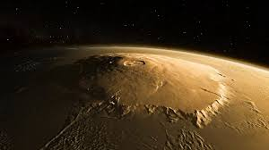
Mars appears to have had a watery past, with ancient river valley networks, deltas, and lakebeds, as well as rocks and minerals on the surface that could only have formed in liquid water. Some features suggest that Mars experienced huge floods about 3.5 billion years ago.
There is water on Mars today, but the Martian atmosphere is too thin for liquid water to exist for long on the surface. Today, water on Mars is found in the form of water-ice just under the surface in the polar regions as well as in briny (salty) water, which seasonally flows down some hillsides and crater walls.

Jupiter is the fifth planet from the Sun, and the largest in the solar system.
It is more than twice as massive as the other planets combined.
Surface Temperature: -110°C
Moons: 95
Diameter: 139,820km
Distance from Sun (AU): 5.20
A brief overview
Jupiter is a world of extremes. It's the largest planet in our solar system – if it were a hollow shell, 1,000 Earths could fit inside.
It's also the oldest planet, forming from the dust and gases left over from the Sun's formation 4.5 billion years ago. But it has the shortest day in the solar system, taking only 10.5 hours to spin around once on its axis.
Jupiter's signature stripes and swirls are actually cold, windy clouds of ammonia and water, floating in an atmosphere of hydrogen and helium. The dark orange stripes are called belts, while the lighter bands are called zones, and they flow east and west in opposite directions. Jupiter’s iconic Great Red Spot is a giant storm bigger than Earth that has raged for hundreds of years.
The king of planets was named for Jupiter, king of the gods in Roman mythology. Most of its moons are also named for mythological characters, figures associated with Jupiter or his Greek counterpart, Zeus.
Size and Distance
With a radius of 43,440.7 miles (69,911 kilometers), Jupiter is 11 times wider than Earth. If Earth were the size of a grape, Jupiter would be about as big as a basketball.
From an average distance of 484 million miles (778 million kilometers), Jupiter is 5.2 astronomical units away from the Sun. From this distance, it takes sunlight 43 minutes to travel from the Sun to Jupiter.
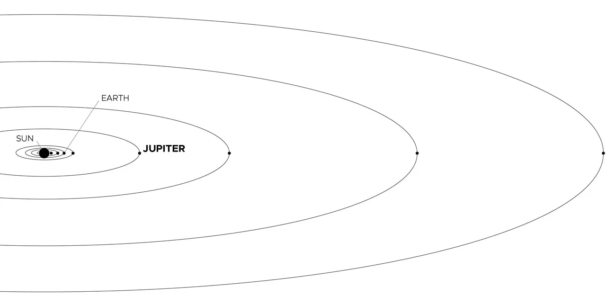
Moons
With four large moons and many smaller moons, Jupiter forms a kind of miniature solar system.
Jupiter has 95 moons that are officially recognized by the International Astronomical Union. The four largest moons – Io, Europa, Ganymede, and Callisto – were first observed by the astronomer Galileo Galilei in 1610 using an early version of the telescope.
These four moons are known today as the Galilean satellites, and they're some of the most fascinating destinations in our solar system.
Surface/Atmosphere
As a gas giant, Jupiter doesn’t have a true surface. The planet is mostly swirling gases and liquids.
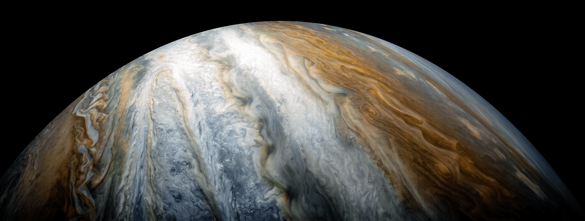
While a spacecraft would have nowhere to land on Jupiter, it wouldn’t be able to fly through unscathed either. The extreme pressures and temperatures deep inside the planet crush, melt, and vaporize spacecraft trying to fly into the planet.
Jupiter's appearance is a tapestry of colorful stripes and spots – the cloud bands that encircle the planet, and the cyclonic storms dotting it from pole to pole. The gas planet likely has three distinct cloud layers in its "skies" that, taken together, span about 44 miles (71 kilometers). The top cloud is probably made of ammonia ice, while the middle layer is likely made of ammonium hydrosulfide crystals. The innermost layer may be made of water ice and vapor.
The vivid colors you see in thick bands across Jupiter may be plumes of sulfur and phosphorus-containing gases rising from the planet's warmer interior. Jupiter's fast rotation – spinning once every 10 hours – creates strong jet streams, separating its clouds into dark belts and bright zones across long stretches.
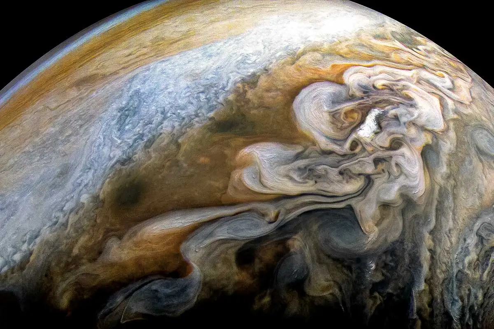
With no solid surface to slow them down, Jupiter's spots can persist for many years. Stormy Jupiter is swept by over a dozen prevailing winds, some reaching up to 335 miles per hour (539 kilometers per hour) at the equator. The Great Red Spot, a swirling oval of clouds twice as wide as Earth, has been observed on the giant planet for more than 300 years. More recently, three smaller ovals merged to form the Little Red Spot, about half the size of its larger cousin.
Saturn is the sixth planet from the Sun, and the second largest in the solar system.
It’s surrounded by beautiful rings.
Surface Temperature: -178°C
Moons: 146
Diameter: 116,460km
Distance from Sun (AU): 9.54
A brief overview
Like fellow gas giant Jupiter, Saturn is a massive ball made mostly of hydrogen and helium. Saturn is not the only planet to have rings, but none are as spectacular or as complex as Saturn's. Saturn also has dozens of moons.
From the jets of water that spray from Saturn's moon Enceladus to the methane lakes on smoggy Titan, the Saturn system is a rich source of scientific discovery and still holds many mysteries.
Rings
Saturn's rings are thought to be pieces of comets, asteroids, or shattered moons that broke up before they reached the planet, torn apart by Saturn's powerful gravity. They are made of billions of small chunks of ice and rock coated with other materials such as dust. The ring particles mostly range from tiny, dust-sized icy grains to chunks as big as a house. A few particles are as large as mountains. 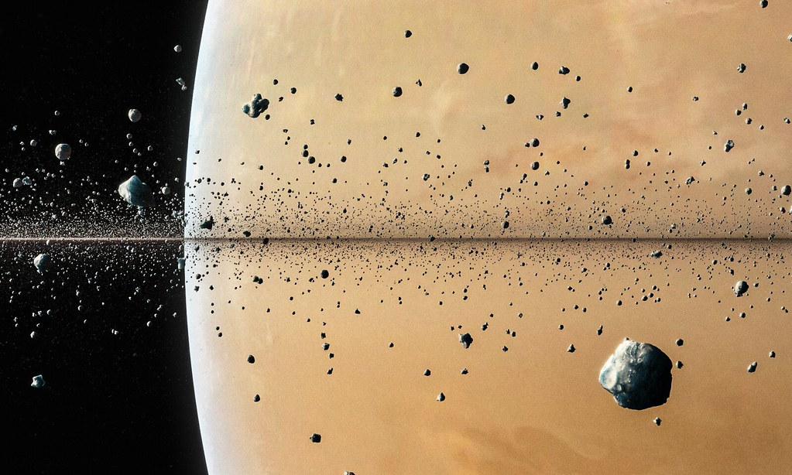 The rings would look mostly white if you looked at them from the cloud tops of Saturn, and interestingly, each ring orbits at a different speed around the planet.
Atmosphere
Saturn is blanketed with clouds that appear as faint stripes, jet streams, and storms. The planet is many different shades of yellow, brown, and gray.
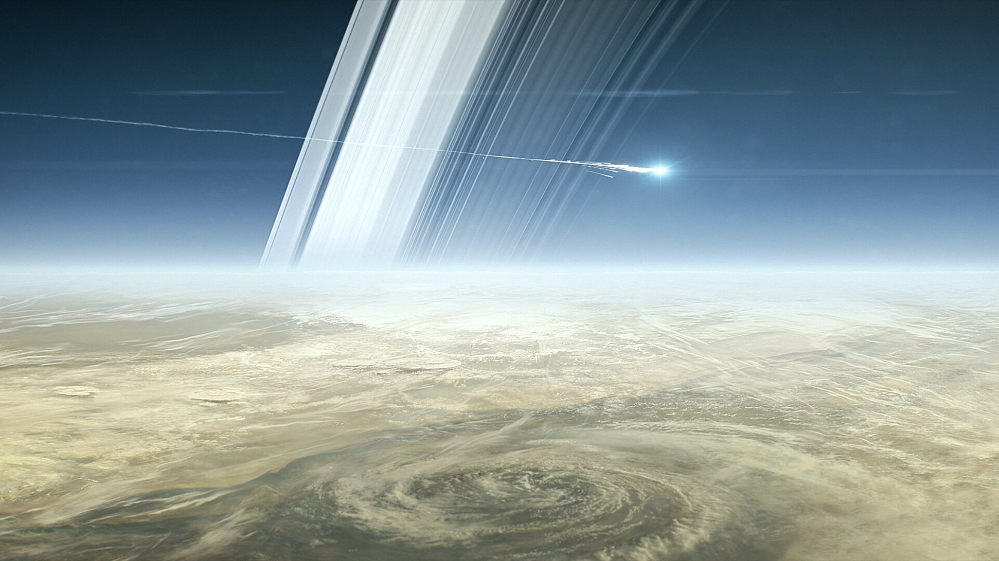
Winds in the upper atmosphere reach 1,600 feet per second (500 meters per second) in the equatorial region. In contrast, the strongest hurricane-force winds on Earth top out at about 360 feet per second (110 meters per second). And the pressure – the same kind you feel when you dive deep underwater – is so powerful it squeezes gas into a liquid.
Saturn's north pole has an interesting atmospheric feature – a six-sided jet stream.
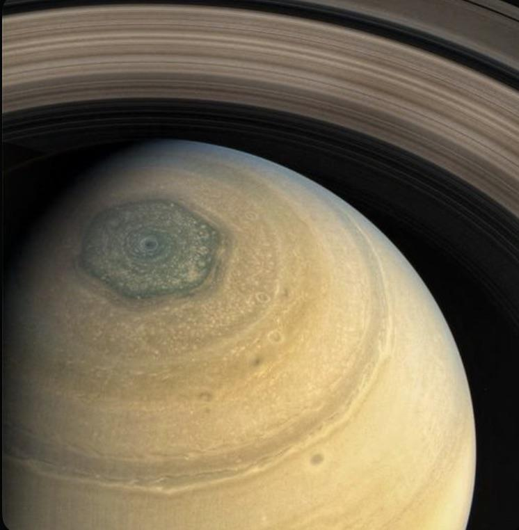
This hexagon-shaped pattern was first noticed in images from the Voyager I spacecraft and has been more closely observed by the Cassini spacecraft since. Spanning about 20,000 miles (30,000 kilometers) across, the hexagon is a wavy jet stream of 200-mile-per-hour winds (about 322 kilometers per hour) with a massive, rotating storm at the center. There is no weather feature like it anywhere else in the solar system.
Size and Distance
With an equatorial diameter of about 74,897 miles (120,500 kilometers), Saturn is 9 times wider than Earth. If Earth were the size of a nickel, Saturn would be about as big as a volleyball.
From an average distance of 886 million miles (1.4 billion kilometers), Saturn is 9.5 astronomical units away from the Sun. One astronomical unit (abbreviated as AU), is the distance from the Sun to Earth. From this distance, it takes sunlight 80 minutes to travel from the Sun to Saturn.
Uranus is the seventh planet from the Sun, and the third largest planet in our solar system. It appears to spin sideways.
Surface Temperature: -195°C
Moons: 28
Diameter: 50,724km
Distance from Sun (AU): 19.22
A brief overview
Uranus is a very cold and windy world. The ice giant is surrounded by 13 faint rings and 28 small moons.
Uranus rotates at a nearly 90-degree angle from the plane of its orbit. This unique tilt makes Uranus appear to spin sideways, orbiting the Sun like a rolling ball.
Uranus was the first planet found with the aid of a telescope. It was discovered in 1781 by astronomer William Herschel, although he originally thought it was either a comet or a star. It was two years later that the object was universally accepted as a new planet, in part because of observations by astronomer Johann Elert Bode.
Orbit and Rotation
One day on Uranus takes about 17 hours. This is the amount of time it takes Uranus to rotate, or spin once around its axis. Uranus makes a complete orbit around the Sun (a year in Uranian time) in about 84 Earth years (30,687 Earth days).
Uranus is the only planet whose equator is nearly at a right angle to its orbit, with a tilt of 97.77 degrees. This may be the result of a collision with an Earth-sized object long ago.
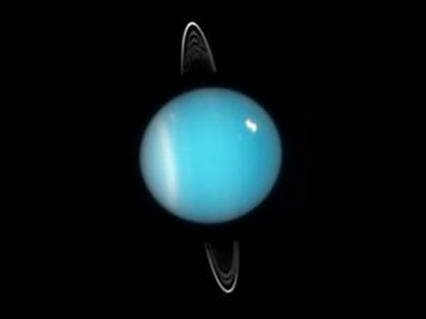
This unique tilt causes Uranus to have the most extreme seasons in the solar system. For nearly a quarter of each Uranian year, the Sun shines directly over each pole, plunging the other half of the planet into a 21-year-long, dark winter.
Size and Distance
With an equatorial diameter of 31,763 miles (51,118 kilometers), Uranus is four times wider than Earth. If Earth was the size of a nickel, Uranus would be about as big as a softball.
From an average distance of 1.8 billion miles (2.9 billion kilometers), Uranus is about 19 astronomical units away from the Sun. One astronomical unit (abbreviated as AU), is the distance from the Sun to Earth. From this distance, it takes sunlight 2 hours and 40 minutes to travel from the Sun to Uranus.
Atmosphere
Uranus' atmosphere is mostly hydrogen and helium, with a small amount of methane and traces of water and ammonia. The methane gives Uranus its signature blue color.
While Voyager 2 saw only a few discrete clouds, a Great Dark Spot, and a small dark spot during its flyby in 1986 – more recent observations reveal that Uranus exhibits dynamic clouds as it approaches equinox, including rapidly changing bright features.
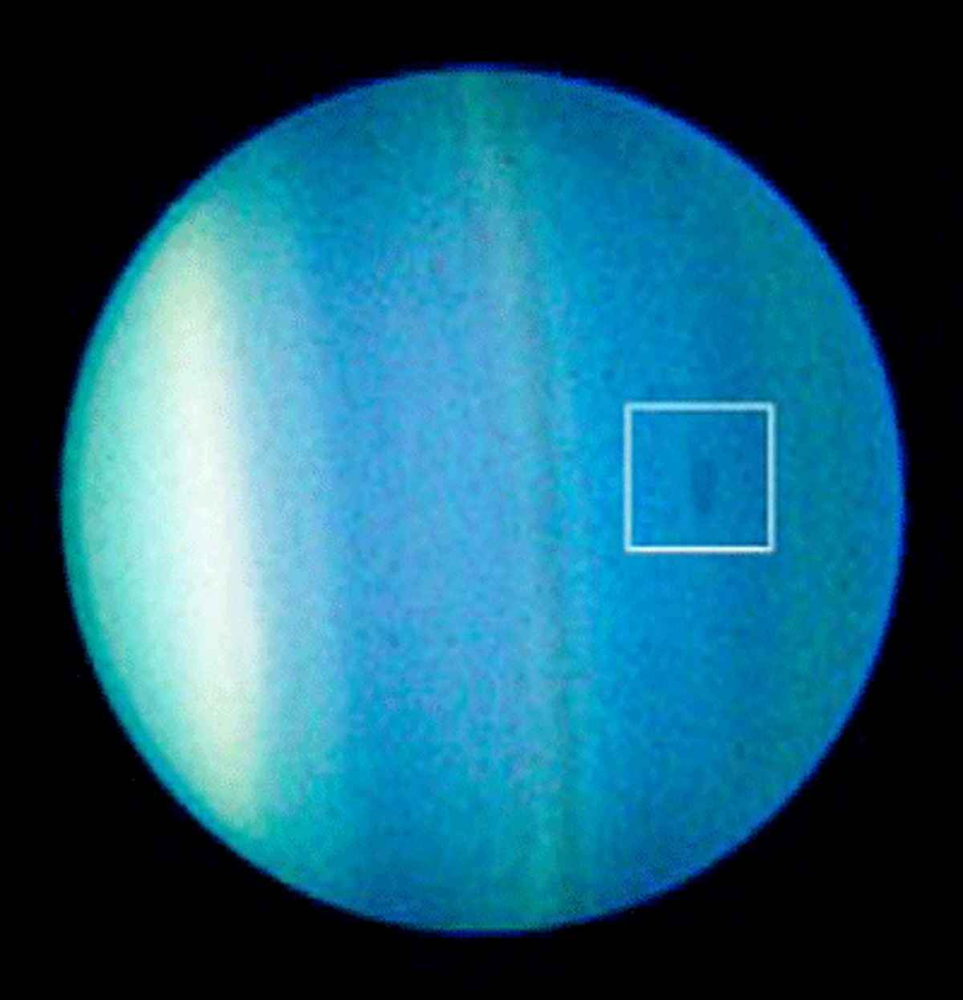
Uranus' planetary atmosphere, with a minimum temperature of 49K (-224.2 degrees Celsius) makes it even colder than Neptune in some places.
Wind speeds can reach up to 560 miles per hour (900 kilometers per hour) on Uranus. Winds are retrograde at the equator, blowing in the reverse direction of the planet’s rotation. But closer to the poles, winds shift to a prograde direction, flowing with Uranus' rotation.
Neptune is the eighth, and most distant planet from the Sun. It’s the fourth-largest, and the first planet discovered with math.
Surface Temperature: -214°C
Moons: 16
Diameter: 49,244km
Distance from Sun (AU): 30.06
A brief overview
Dark, cold, and whipped by supersonic winds, ice giant Neptune is more than 30 times as far from the Sun as Earth. Neptune is the only planet in our solar system not visible to the naked eye. In 2011 Neptune completed its first 165-year orbit since its discovery in 1846.
Neptune is so far from the Sun that high noon on the big blue planet would seem like dim twilight to us. The warm light we see here on our home planet is roughly 900 times as bright as sunlight on Neptune.
Discovery
On the night of Sept. 23-24, 1846, astronomers discovered Neptune, the eighth planet orbiting around the Sun. The discovery was made based on mathematical calculations of its predicted position due to observed perturbations in the orbit of the planet Uranus.
As astronomers continued to observe the newly discovered Uranus, they noticed irregularities in its orbit that Newton’s law of universal gravitation could not fully explain. However, effects from the gravity of a more distant planet could explain these perturbances.
By 1845, Uranus had completed nearly one full revolution around the Sun and astronomers Urbain Jean-Joseph Le Verrier in Paris and John Couch Adams in Cambridge, England, independently calculated the location of this postulated planet. Based on Le Verrier’s calculations, on the night of Sept. 23-24, 1846, astronomer Johann Gottfried Galle used the Fraunhofer telescope at the Berlin Observatory and made the first observations of the new planet, only 1 degree from its calculated position.
Atmosphere
Neptune's atmosphere is made up mostly of hydrogen and helium with just a little bit of methane. Neptune's neighbor Uranus has a similar makeup; the methane absorbs other colors but reflects blue, giving these ice giants their similar hue. Many images of Neptune, coming from the Voyager 2 flyby in 1989, show Neptune as a much deeper blue. This was because the Voyager team tweaked the images, to better reveal clouds and other distinctive features on the planet, compared to the hazy, uniform view of Uranus that Voyager 2 had captured in 1986.
Neptune is our solar system's windiest world. Despite its great distance and low energy input from the Sun, Neptune's winds can be three times stronger than Jupiter's and nine times stronger than Earth's. These winds whip clouds of frozen methane across the planet at speeds of more than 1,200 miles per hour (2,000 kilometers per hour). Even Earth's most powerful winds hit only about 250 miles per hour (400 kilometers per hour).
In 1989 a large, oval-shaped storm in Neptune's southern hemisphere dubbed the "Great Dark Spot" was large enough to contain the entire Earth. That storm has since disappeared, but new ones have appeared on different parts of the planet.
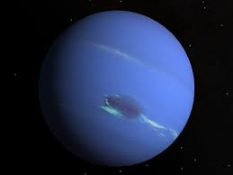
Size and Distance
With an equatorial diameter of 30,775 miles (49,528 kilometers), Neptune is about four times wider than Earth. If Earth were the size of a nickel, Neptune would be about as big as a baseball.
From an average distance of 2.8 billion miles (4.5 billion kilometers), Neptune is 30 astronomical units away from the Sun. From this distance, it takes sunlight 4 hours to travel from the Sun to Neptune.
Pluto was once our solar system's ninth planet, but has been reclassified as a dwarf planet.
It's located in the Kuiper Belt.
Zoom Percentage
Distance Scale
Accurate distance value relative to size:
Size Scale